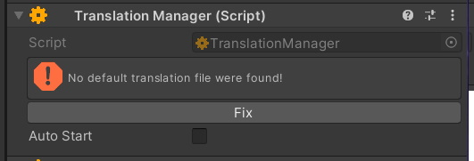
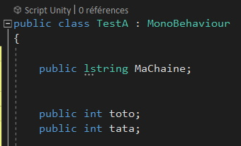
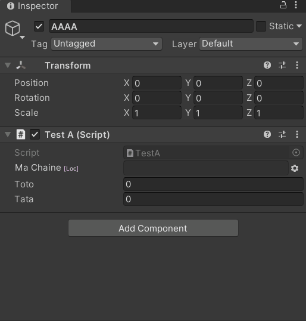

Multilangue
[Utilise Logiked_Language]
Avec l'assembly Logiked Language, faire un jeu en multilangue c'est plus simple. Le plugin permet de s'abstraire au plus possible de l'édition manuelle d'un fichier de language. De plus le fichier généré est compatible avec le standard POedit, permettant à n'importe quel utilisateurs d'utiliser ces outils pour concevoir son propre patch de langues.
Notes : Beaucoup des autres plugin logiked utilisent cette dépendance. Mettez vous y aussi, ensemble on travaille mieux.
Mini tuto
Pour commencer, placez le singleton TranslationManager dans votre scène, (à coté de votre game manager si possible). Il vous proposera de créer un patch de traduction pour vous. Clickez sur "Fix"

Vous avez maintenant accés à la classe lstring (qui remplacera vos string pour un usage localisé). Ici une classe d'exemple avec un lstring à été définie.

Le résultat dans l'editeur est une chaîne à laquelle vous pouver
- Assigner une clé ID à la chaîne
- Modifier sa valeur en temps reel
- La supprimer
Le tout sans avoir a vous soucier du fichier de traduction, qui se regénère automatiquement à chaque modifications.

Notes : Le fichier de traduction par défaut est editable dans les settings du plugin (fenêtre LogikedConfiguration) ou via LogikedPlugin_Language.Instance.DefaultTranslation dans l'editeur.
La section utile
- Pour interagir directement avec des UI, utilisez le composant LocalizedTextComponent
Changer le patch
Mettez vote nouveau patch dans le répertoire StreamingAssets/languages au format .po. Ensuite il ne vous reste plus qu'a appeler LoadLanguagePatch(string).
Todo
- Une fenêtre editeur qui montre et regroupe toute les traductions du jeu.
- Developper un listing des patchs disponibles (et informations de header des patches) dans Streaming Assets afin de rendre plus simple le changement
- Developper un script qui gènère automatiquement les clés des traductions dans une classe statique, comme une grande énum.